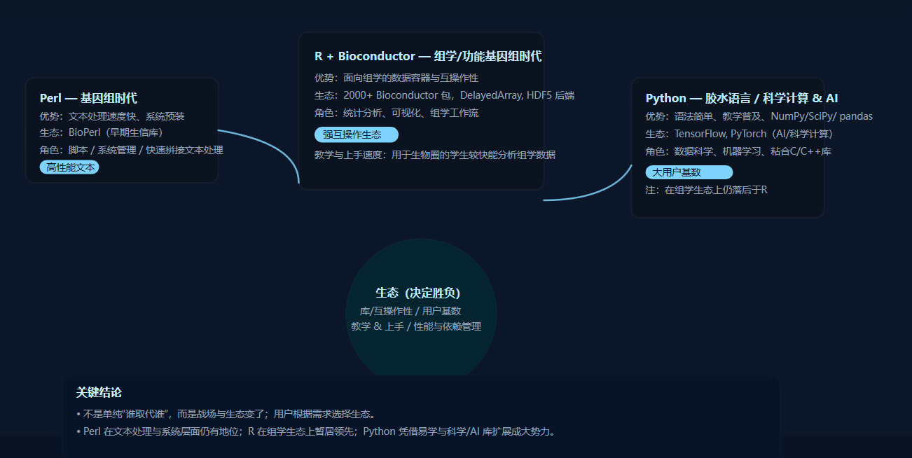
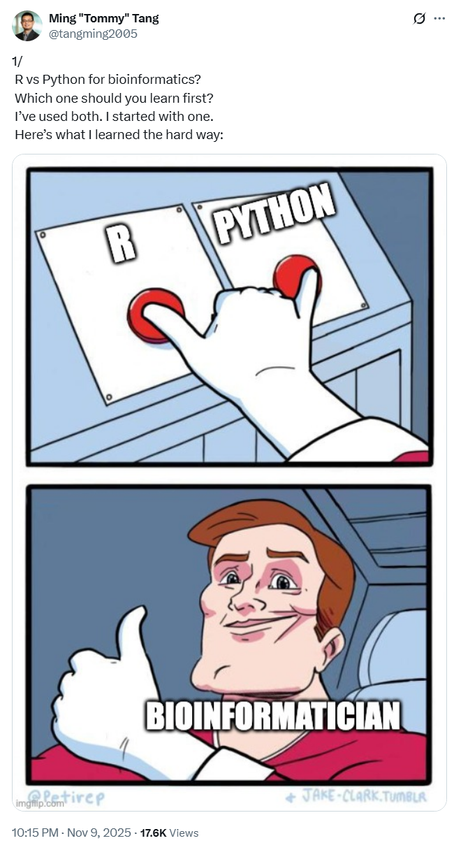
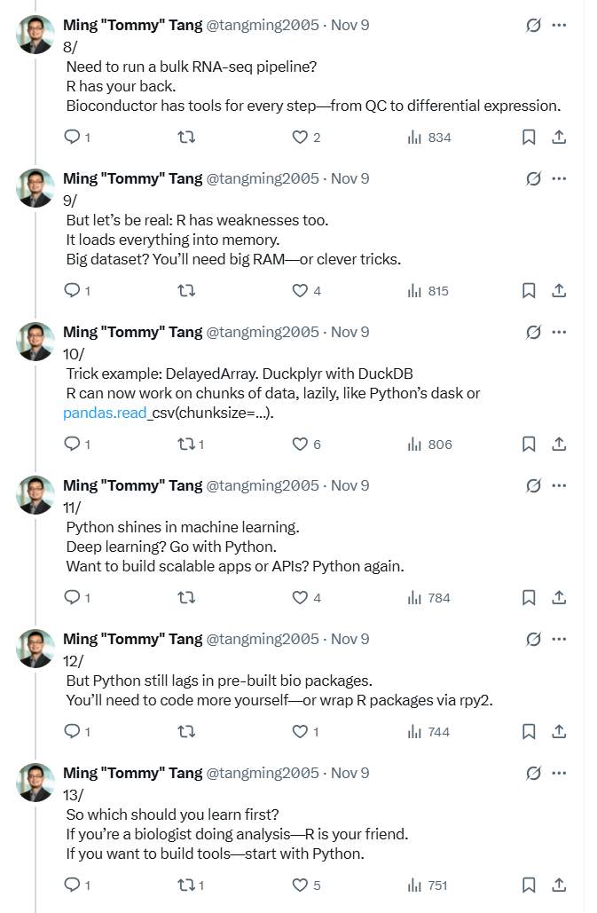
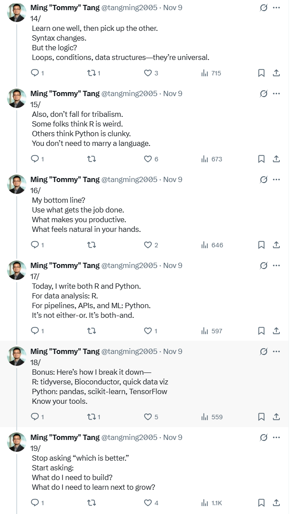

先声明：这里只讨论生物信息学的应用场景。
很多人都有一个共识：Python 取代了 Perl。我的看法更像是：Python 当然赢了，但它未必是“在 Perl 的主场赢的”，更多时候是战场换了，用户迁移了。
先问一句：Python 凭啥赢？
靠 AI？在 AI 大火之前，Perl 在很多团队里就已经不再是首选了。
靠 NumPy / pandas 的数据科学生态？靠 scikit-learn 的机器学习？这些都很关键，但历史并不算长；而当它们真正形成势能的时候，Perl 的浪潮早已退下去。
Perl 为什么曾经那么强
Perl 在基因组时代的爆火是有原因的：文本处理就是它的强项。在大量 FASTA/FASTQ、注释文本、各种日志与报表的年代，Perl 的表达力与效率都非常能打；很多时候，Python 在纯文本处理速度上确实吃亏。
更重要的是，Perl 当年有 BioPerl 这样成体系的生态支撑。多年过去，Python 在生物学领域当然积累了很多工具，但在“当年 BioPerl 那种一整套以生物序列处理为中心的基础设施”上，确实很难说出现了同等地位、同等覆盖面的替代。
真正的转折：组学时代的“主场”变了
后基因组/功能基因组时代到来，尤其是转录组学兴起后，生信日常从“处理序列文本”转向“做统计建模与组学分析”。这个阶段的最大赢家，往往不是 Python，也不是 Perl，而是 R。
R 能在组学里站稳，核心在 Bioconductor：它不只是“很多包”，而是一套基础设施（尤其是数据容器/数据结构）先把路修好，然后无数包在同一块地基上生长、互相协作。到今天，它依然是组学分析里非常难撼动的生态。
从结果上看，Python 和 R 在组学生态的“整体厚度”上，仍然有差距。很多 R 包被用 Python 重写，单个项目可能很亮眼，但当你把它们拼到一整条分析流水线里时，“互作性”和“共同约定”往往才是决定体验的关键。
至于单细胞分析里大家常吐槽的“R 扛不住”，更多是某些工作流和实现方式带来的观感，不必简单归因到语言本身。Bioconductor 在单细胞方向也有一套可扩展的设计（例如 DelayedArray 这种前端抽象，后端可以接 HDF5，但不限于 HDF5）。
所以：Python 取代 Perl？还是用户跑去用 R？
于是我会更愿意把它说成：虽然大家口头上说“Python 取代了 Perl”，但在生物信息学里，很多时候更像是用户从 Perl 的主场，整体迁移到了 R 的主场；而 Python 则在更大的科学计算与工程生态里，成为了更强的“胶水语言”。
把 Python 和 Perl 拿出来对比，其实也因为它们都经常被定位成“胶水语言”。如果一定要在 Perl 擅长的领域硬 PK，“Python 语法简单”“只有一种显式解”这类口号并不构成决定性优势；语言的成功与否，往往不是靠几句哲学宣言能解释清楚的。
更现实的一点是：当一种语言赢了，世界会自动帮它补齐一套“赢的理由”；当一种语言失势，它再多的优点也会被写成“门槛”或“历史包袱”。这并不稀奇。
生态才是胜负手：大家都活在生态里
真正决定胜负的，通常是生态：有没有人把地基搭好，有没有足够多的用户把场景填满。
历史上，很多语言的崛起都离不开“出道就带的基础设施”：Java 的类库、Perl 的 BioPerl、R 的 Bioconductor、Python 在 AI 时代的 TensorFlow/PyTorch……都说明了同一件事：只要生态把大多数人照顾好，它就会赢。
至于“脚本语言依赖复杂、调包侠”的吐槽，在生信领域确实常见。但这往往不是脚本 vs 编译型的本质区别，更像是依赖管理的普遍难题：C/C++ 也经常遇到 .so/.dll/.dylib 找不到或版本冲突，只是大家习惯把它叫做“系统环境问题”。换个语言，本质还是同一道题。

语法简单与教学普及：Python 的另一张王牌
Python 的语法简洁、教学普及度高，带来了巨大的开发者基数。这点非常关键：当一个语言进入课堂，它就会持续产出“能用它的人”。相比之下，Perl 往往只在特定圈子里出现，而现在很多生信课程也不再系统地教 Perl 了。
换个更大视角：Perl 没死，只是退居“系统底层”
Perl 的文本处理强，也让它在早期 Web 开发里有过重要位置；后来上不及 Java 的企业级光环，下不如 PHP 的简单粗暴。与此同时，Python 并没有在这条赛道上和 Perl 正面对撞，而是更用力地去“卷”科学计算——它把大量 C/C++ 核心库粘在一起，连接起更大的世界。等到 NumPy、SciPy 等核心库站稳脚跟，再叠加数据科学与 AI 的东风，Python 的优势就滚雪球一样放大。
而 Perl 呢？它并没有“消失”。几乎没有哪个 *nix 系统不预装 Perl，在系统管理和很多底层脚本里，它依然随处可见。这是一种强大到有点可怕的生态惯性：你以为它退场了，但它一直在那里。
结尾：不是谁取代了谁，而是谁更适合你的需要
所以我更愿意把结论写得直白一点：不是谁取代了谁，而是用户在不同阶段选择了更适合的工具；而工具能否被选择，很大程度取决于它背后的生态是否恰好解决了你的问题。
生态的构建，一方面需要少数人把地基搭好，另一方面需要大量用户把真实场景填进去。一个时代有一个时代的需求，也会造就一个时代的英雄。Perl 是旧时代的英雄；R 在组学时代的影响力巨大；Python 则在更广阔的科学计算与 AI 时代加速扩张。至于未来谁会更强？看需求怎么变，也看生态怎么长。
最后搬运一下 @tangming2005 的推文：反正我也不是那个能“打地基”的人，谁的生态更能满足我的需求，我就更愿意跟谁混。



